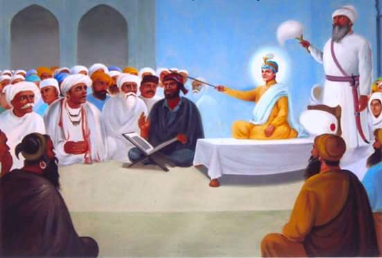

A Story of Wisdom and Humility

Once, Guru Harkrishan Ji was staying in Delhi. A proud Brahmin scholar came to test the Guru's knowledge. He believed that only those who studied scriptures could understand true wisdom.
Guru Harkrishan Ji, still a child, smiled and said, “Even a simple man can explain the meanings of sacred texts if blessed by Waheguru.” The Brahmin laughed and challenged this idea.
Guru Ji called for a simple waterman named Chhaju, who was uneducated and humble. Guru Ji placed his hand on Chhaju’s head and asked him to explain the verses the Brahmin had chosen.
To everyone’s surprise, Chhaju explained the scriptures beautifully. The Brahmin was shocked. He bowed his head in shame and then with respect. He realized true wisdom comes from divine grace, not pride.
“Guru Harkrishan Ji taught that true wisdom comes from Waheguru, not pride or status.”
Back